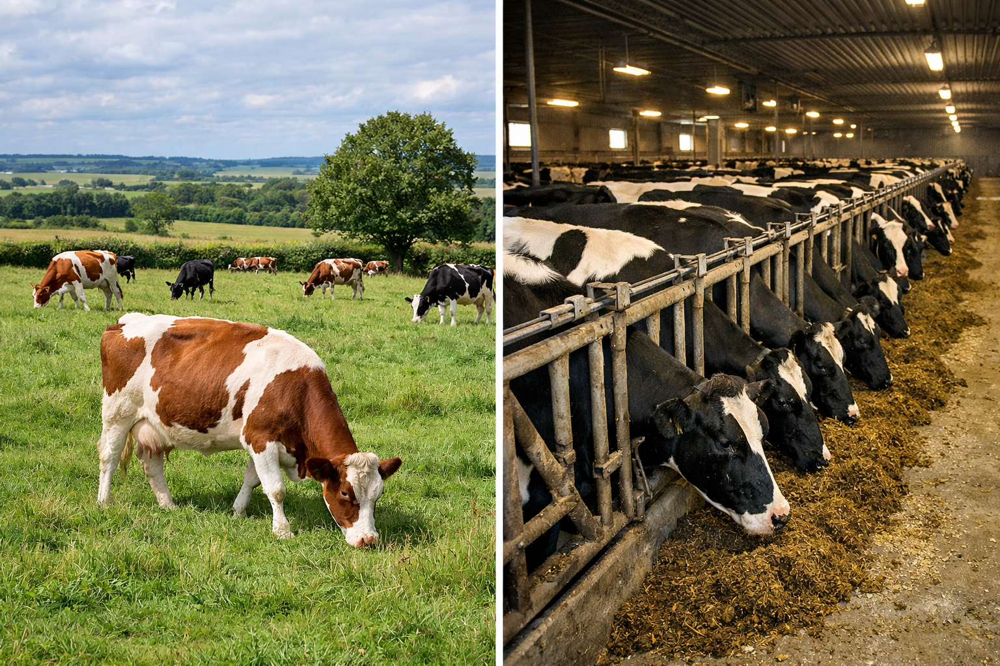

1. L'éthique : le bien-être animal en question
Des conditions d'élevage souvent difficiles
La majorité des animaux élevés pour la consommation mondiale sont issus de l'élevage industriel ou intensif. En France, par exemple, plus de 80 % des poulets vivent en bâtiments fermés, à des densités très élevées (jusqu'à 22 kg de volailles par m²). Les porcs sont souvent maintenus dans des espaces restreints, sans accès à l'extérieur. Ces conditions provoquent des comportements anormaux liés au stress : automutilation, agressivité, apathie.
La souffrance animale, une réalité reconnue
Depuis 1997, le droit européen reconnaît officiellement les animaux comme des êtres sensibles capables de ressentir la douleur et les émotions (article 13 du Traité sur le fonctionnement de l'UE). Pourtant, les standards de bien-être restent insuffisants dans de nombreux pays. Les associations comme L214 et PETA publient régulièrement des enquêtes vidéo dans des abattoirs, alimentant un débat public croissant.

Source suggérée : Wikimedia Commons (mots-clés : "factory farming" / "free range cattle")
2. L'écologie : une empreinte environnementale massive
Les gaz à effet de serre
L'élevage est responsable d'environ 14,5 % des émissions mondiales de gaz à effet de serre, selon la FAO. Le bœuf est de loin le plus impactant : produire 1 kg de bœuf émet en moyenne 27 kg de CO₂ équivalent, contre 2,7 kg pour le tofu ou 0,9 kg pour les légumes secs. Les principaux gaz émis sont le méthane (fermentation entérique des ruminants) et le protoxyde d'azote (déjections).
L'eau et les sols
L'élevage est le premier consommateur d'eau douce mondial : il faut environ 15 000 litres d'eau pour produire 1 kg de viande bovine. À titre de comparaison, 1 kg de blé nécessite environ 1 500 litres. Par ailleurs, les pâturages occupent 70 % des terres agricoles mondiales et contribuent à la dégradation des sols par surpâturage.
Le lien avec la déforestation
En Amérique du Sud, la majorité de la déforestation est directement liée à l'élevage bovin et à la culture du soja utilisé pour nourrir le bétail. Le Brésil abrite les plus grands troupeaux bovins du monde (plus de 220 millions de têtes) et est aussi l'un des premiers exportateurs de viande. La corrélation entre consommation mondiale de viande et destruction des forêts est aujourd'hui scientifiquement établie.
3. L'économie : emplois, prix et alternatives
Une industrie qui fait vivre des millions de personnes
L'élevage est un secteur économique majeur. En France, il emploie directement plus de 300 000 personnes (éleveurs, transformateurs, distributeurs) et contribue à l'équilibre des territoires ruraux. À l'échelle mondiale, 1,3 milliard de personnes dépendent de l'élevage pour leur subsistance, souvent dans des pays à faibles revenus.
Le prix, un frein aux alternatives
Les alternatives végétales (steaks de soja, protéines d'insectes, viande cultivée) restent souvent plus coûteuses que la viande conventionnelle, dont le prix est soutenu par des subventions publiques. En Europe, l'agriculture reçoit plus de 50 milliards d'euros de subsidies par an via la PAC, dont une part importante bénéficie à l'élevage intensif. Cela crée une concurrence déloyale avec les filières durables.
Les filières alternatives en développement
La viande végétale (Beyond Meat, Impossible Foods), les protéines d'insectes et la viande de culture (produite en laboratoire à partir de cellules animales) sont des secteurs en plein développement. Singapour a été le premier pays à autoriser la vente de viande de poulet cultivée en 2020. Ces alternatives peuvent réduire drastiquement l'empreinte environnementale et la souffrance animale.

Source : Our World in Data — Environmental impacts of food (données libres)
Et concrètement, que faire ?
Changer ses habitudes alimentaires n'implique pas de devenir végétarien du jour au lendemain. Voici des pistes simples :
- Réduire la fréquence de consommation de viande rouge (ex : une portion par semaine au lieu de quotidiennement).
- Mieux choisir : privilégier les labels bien-être animal (Label Rouge, Bio, Agriculture Biologique, etc.).
- Varier les protéines : légumineuses (lentilles, pois chiches, haricots), œufs, poissons issus de pêche durable.
- Soutenir les filières locales et les éleveurs qui pratiquent un élevage extensif respectueux.
Conclusion
La consommation de viande n'est ni un sujet purement moral ni purement écologique. C'est un enjeu systémique qui touche l'économie, la culture, la santé, le droit animal et l'avenir de la planète. Prendre conscience de ces dimensions est le premier pas vers des choix plus éclairés. Chaque assiette est une décision — petite ou grande — qui s'inscrit dans un système global.
📚 Sources
- FAO — L'ombre portée de l'élevage, 2006 (fao.org)
- EAT-Lancet Commission — Food in the Anthropocene, 2019 (eatforum.org)
- Our World in Data — Impacts environnementaux de l'alimentation
- L214 — Association de défense des animaux (l214.com)
- Compassion in World Farming France (ciwf.fr)
- Commission européenne — Secteur de la viande (agriculture.ec.europa.eu)